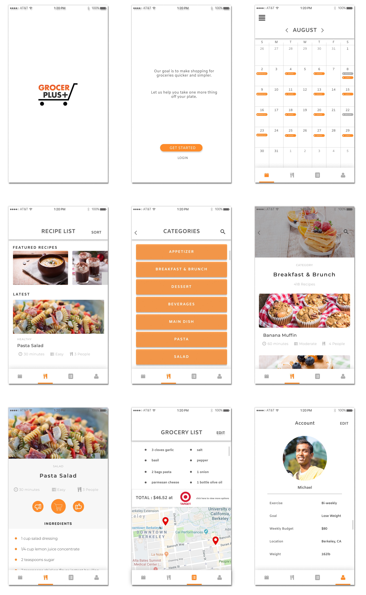

Grocer Plus
Industrial Engineering 190: Product Design
Professor: Rachel Powers
Team: Harsehaj Singh, Bobby Gill, Ryan Higgins, Steffan Cross
The Problem
College can be an extremely stressful time for many people as they face
new levels of academic pressure, new environments and new challenges in
learning to become a truly self-sufficient adult. A part of those challenges
is learning basic skills, including how to budget, grocery shop, and cook
healthily. Unfortunately, with academic and extracurricular commitments,
these often get pushed off. Then, when it comes time to actually eat, some
people just eat out which gets to be quite expensive. For those who do make
the trip to the grocery store, more often than not, it’s without planning.
They head there, peruse around, buy some things and only when they’ve returned
home do they realize they bought too many snacks and things they don’t need
and not enough of the things they actually do.
GrocerPlus is our answer to that. An app that quickly puts together recipe-based
grocery lists for the user. Based on their budget, schedule, meal preferences,
location, and desired nutrition, within minutes one can choose recipes that
look appealing, add them to their cart, and get real grocery lists for the
markets in their area.
User Research
We began our research with an online survey of about 100 students that
consisted of a few simple questions on their eating habits. Of the respondents,
62% felt that they spent too much on food, 80% made an effort to cook at
least one meal at home per week, and on average they rated their efficiency
when going grocery shopping at 6 out of 10.
With this info, we conducted personal follow up interviews with a few students to
gain a better understanding of why they submitted the answers they did.
Through these interviews, we filled in gaps in our understanding and refined
what we were planning to offer.
Design Process
Before drawing up any designs we began by grouping functions that belonged
together. This became the screens for our app. Based off of our
groupings we drew up sketches for the layout of the app.
Using Figma we made a lofi mockup to test usability. From the feedback of
that mockup, we transferred it to a more fully fleshed-out design.
We often got feedback saying that nutrition and diet tracking would work
well with the service we would be providing. While that may have been true,
we decided to not include those because, of course, those services already
exist but mainly we didn’t want to lose the focus of what this app intends to accomplish.
With clean UI, few menus and screens our app makes the experience as streamlined
and simple as possible.

Our writeup can be found
here